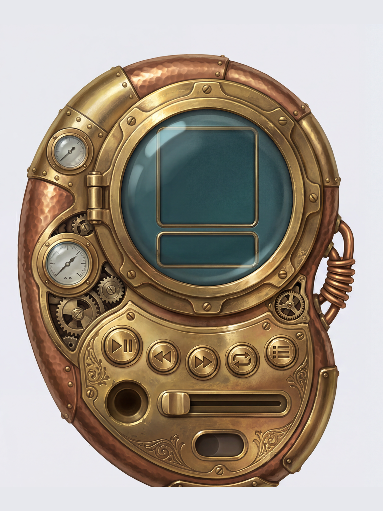
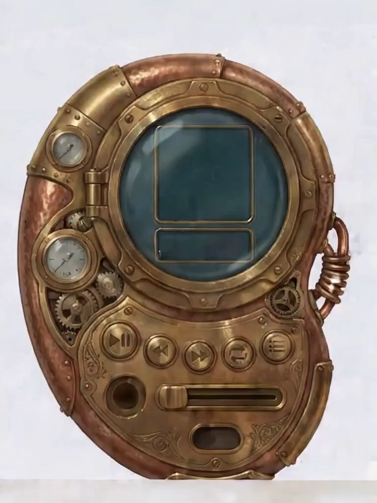
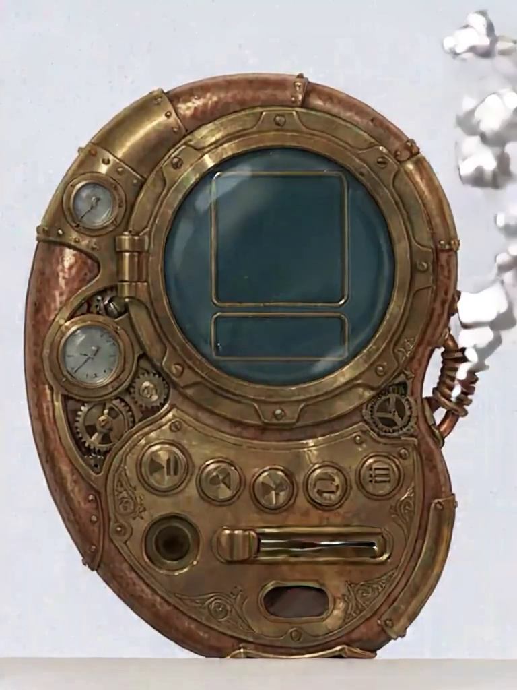
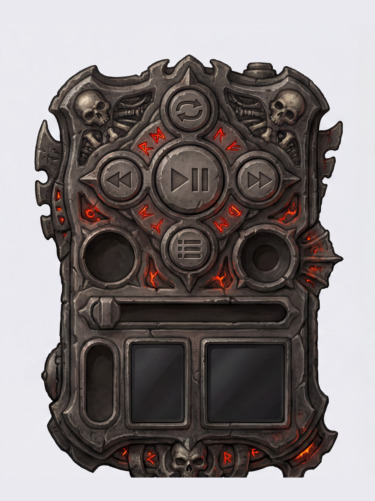
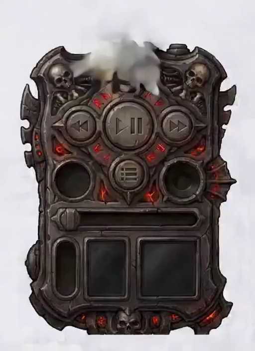
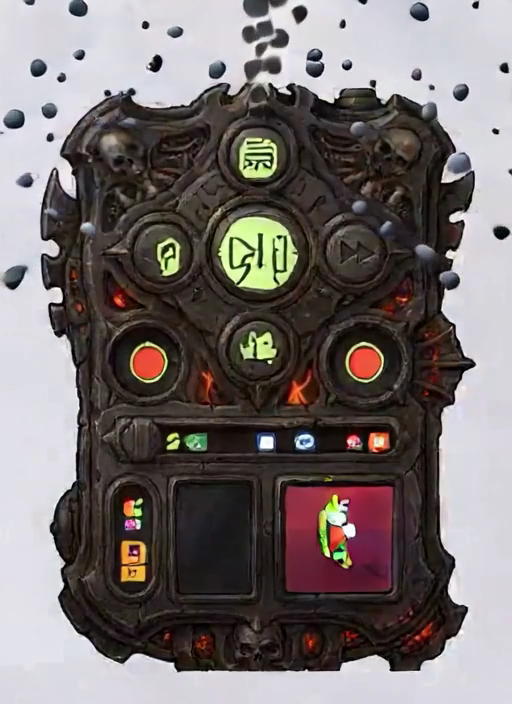

The two corrected probes (ping-pong loops)
Both 25f (LoRA training length), STG global knob off, multiscale off. P1 also bumps output res to 768×1024 to test the "did low res cause the glyph smear" question.
P1 steam — input vs start vs end (the res test)
f0 is faithful to the input (no frame-0 reinvention); f24 holds identity. This is what "correct usage + higher res on a detail-dense subject" looks like.



P2 diablo — start vs end (the OOD failure)
The dark, low-contrast, stylized subject the base model has no prior to hold frozen. Corrected knobs did not stop the resynthesis.



Settings diff — Lightricks (card / linked workflow) vs our round 5 vs round-6 fix
Their 4 published examples are all photographs (beach+sunglasses, man+cow+clouds, woman+tears, motel neon). Ours are stylized dark single-object UI paintings — the dominant gap is input distribution, not a slider.
| setting | Lightricks | round 5 (ours) | on fal? | round-6 |
|---|---|---|---|---|
| frames | 25 (text) | A/B 121, C 25 | yes | 25 both |
| resolution | 512×704 | 512×704 | yes | P1 → 768×1024 |
| STG | stg_v 1.0 block 29 | global 1.0 (≠ block-29) | NO — block target ComfyUI-only | → 0 |
| multiscale | none | true (fal default, unset) | yes | → false |
| steps / CFG | 30 / 4.0 (text) | 30 / 4.0 | yes | keep |
| distill LoRA | 0.2 / 0.5 (workflow) | 0.2 / 0.5 (default) | yes | keep (r5 caveat was wrong) |
| trigger / LoRA str | CINEMAGRAPH_MOTION / 0.7–3.0 | present / 1.0 | yes | keep |
| sampler | RES4LYF ClownSampler + ManualSigmas 8-step | fal black box | NO — ComfyUI-only | n/a |
Bottom line
1. Input distribution is the real gap — their inputs are photographs, ours are stylized dark UI art (OOD). 2. fal cannot express the full recipe — STG block-29 targeting + the RES4LYF distilled sampler are ComfyUI-only; only a global STG knob + black-box sampler are exposed. 3. Corrected knobs (STG=0, multiscale=false) + higher res gave the best steam of all rounds but did nothing for the OOD diablo. LTX+Cinemagraph LoRA is viable only on detail-dense subjects at ~25f/768×1024/STG=0/multiscale=false; use Seedance for dark stylized skins and keep the temporal-std hard-composite mask safety net regardless.